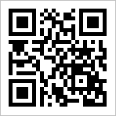
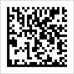
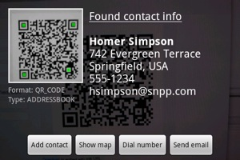

Barcode Scanner begrijpt ook hoe om te lezen tweedimensionale barcodes, zoals QR Codes en Data Matrix codes. Bijvoorbeeld, de volgende codes bevatten een hyperlink naar de ZXing Project home page:
 
U kunt contactgegevens ook te vertegenwoordigen in een QR-code, en zet het op een visitekaartje of website. Als u het scannen, de resultaten scherm biedt een keuze van acties:

Naast URL's en contactgegevens, kunnen QR Codes bevatten:
Vertaald door Google Translate.